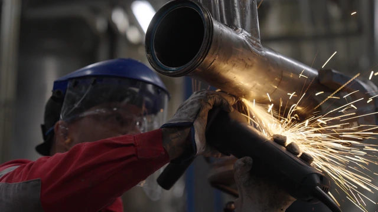
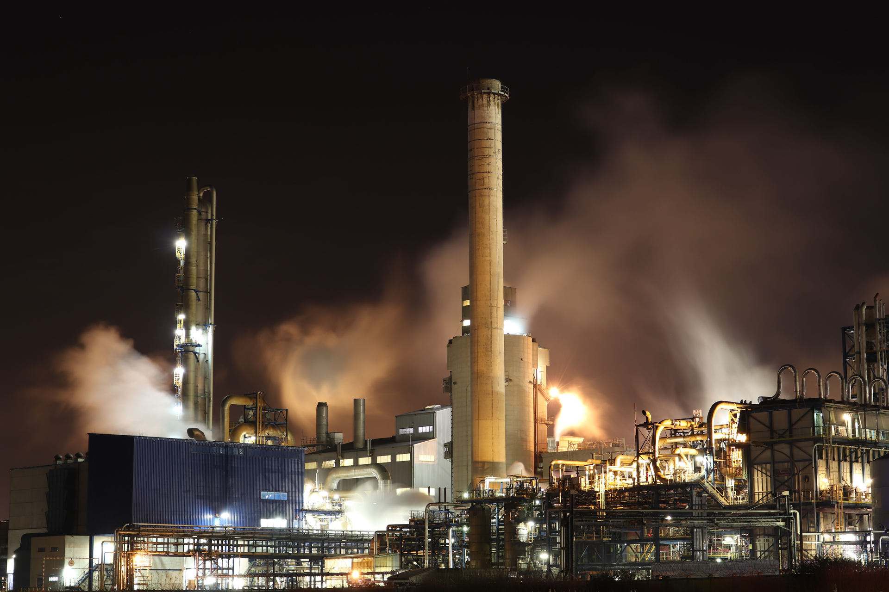

Fabricación y montaje
Soluciones a medida para instalaciones y equipos industriales.
- Tuberías y calderería
- Cerrajería y soldadura especializada
- Fabricación y montaje a medida

Fabricación, montaje y mantenimiento de tuberías, estructuras metálicas y equipos industriales.
Servicios
Soluciones a medida para instalaciones y equipos industriales.

Asistencia a los equipos a lo largo de su vida útil.

Trabajos en instalaciones y equipos durante paradas programadas o en situaciones de emergencia.
En vídeo
Conozca de cerca al equipo y el trabajo de montaje en un entorno industrial.

Preparación y montaje por el equipo.
Trabajos
Tuberías y equipos industriales: una selección de trabajos de FC Montagens.

Montaje y mantenimiento
Preparación, montaje y mantenimiento de tuberías, con el equipo de FC Montagens en obra.
Ver fotografía

Una selección de imágenes de fabricación, montaje e instalaciones.


Una selección de nuestro portafolio de fabricación, montaje y mantenimiento industrial.


La empresa
Fundada en 2018 y con sede en Matosinhos, FC Montagens presta servicios de fabricación, montaje y mantenimiento industrial a nivel internacional.
Nacimos para responder a las necesidades de montaje y mantenimiento industrial. El equipo reúne a profesionales de distintas especialidades para intervenir en instalaciones y equipos.
Cuéntenos su proyecto
Ser la primera opción de nuestros clientes en montaje y mantenimiento industrial, combinando los conocimientos del equipo con el compromiso con la calidad. Seguir creciendo para responder a distintos sectores y retos.

Equipamiento y tecnología
La soldadura orbital forma parte de nuestra capacidad de intervención en tuberías. Utilizamos un sistema mecanizado con control de los parámetros de soldadura.
Cuéntenos los requisitos de su instalación para evaluar la solución adecuada al trabajo.
Solicitar presupuestoContacto
Describa el trabajo, la ubicación y las fechas previstas. Para enviar planos o fotografías, contacte por correo electrónico.
{kind=link}